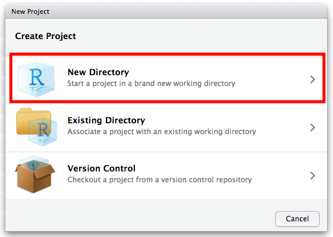
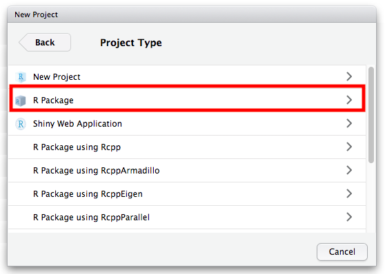
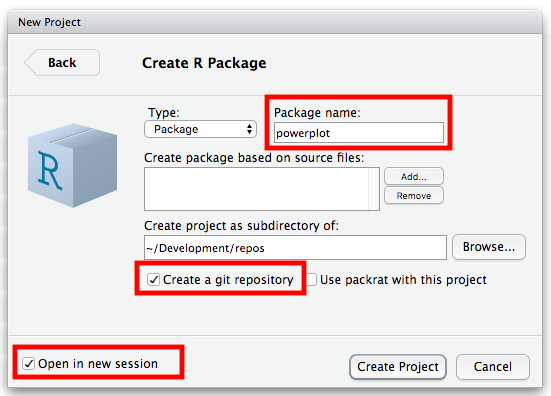
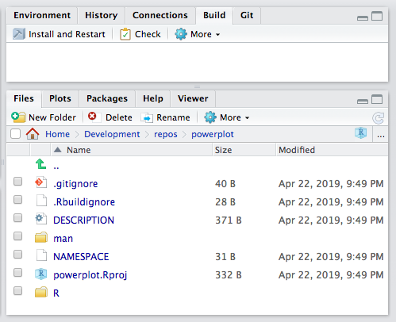
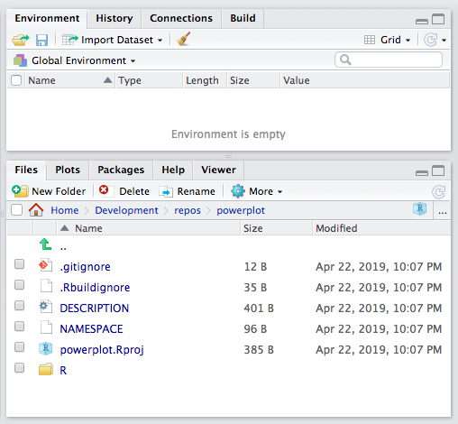
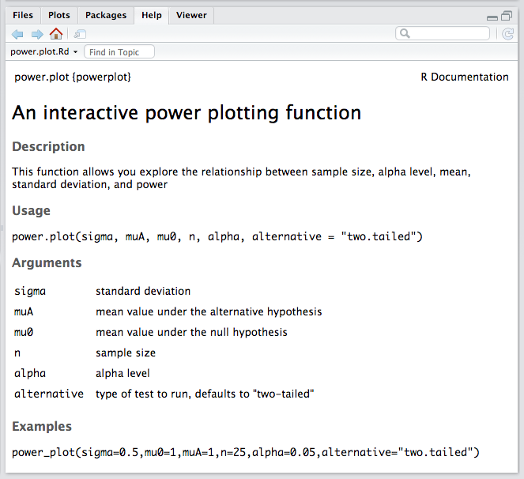

25 Building Custom R Packages
Objectives
This module provides an overview of how to build and distribute your own, custom R package. An R package bundles together code, data, and documentation [1] using a set of standard conventions for organizing the components of the bundle and [2] in a way that is easily reusable, shareable, and distributable. Below, we go through some examples of how to create bare-minimum R packages. This module is based heavily and shamelessly on material from the following sources:
- Writing an R Package from Scratch, by Hilary Parker
- Making your First R Package, by Fong Chun Chan
- Writing an R Package from Scratch, by Thomas Westlake
- R Package Primer, by Karl Broman
Preliminaries
- Install and load these packages: {devtools} and {roxygen2}
- Install this package: {withr}
- Load {tidyverse} and {usethis}
- Additionally, make sure you have a C compiler installed on your computer. Many computers do, by default, but to be sure do the following:
NOTE: These are not R packages, but rather additional bits of software!
Once you have done all of this, switch to the R console and run the command has_devel(). If all is well, it should return the message “Your system is ready to build packages!”
Steps for Creating a Package
Create the Package Directory
First, we are going to create a directory with the bare minimum structure needed for an R package. As an illustration, we are going to make a package for a single custom function I created for Module 17 on statistical power and effect size. We can create a new package one of the following ways:
Method 1:
- Choose “File > New Project” and then following the dialog boxes to create a new project…
- Create the project in a new directory…

- … choose the form of the project to be a “package”…

- … and name your package (for this example, use the name “powerplot”), choose to create a git repository for the project, and choose to open it in a new session.

Once you create a new package project by this process, a new RStudio session will open, with the working directory set to the newly created directory for the package. you should see the following components:
- An
R/directory, which will hold your code files - A basic
DESCRIPTIONfile, which is a text file that contains metadata about your package - A
NAMESPACEfile - A
man/directory, which will hold the manual pages for your package - An
.Rbuildignore file, which like.gitignoreis a list of files and directories that you do not want included with your package when you eventually “build” it (i.e., bundle it up into a single archive for distribution)
Method 2:
- Alternatively, you can accomplish much of this same setup by running the
create_packages()command from the {usethis} package. Specify as an argument to this function a <PATH NAME> to the package directory you want to create.
usethis::create_package("~/Development/Repos/powerplot")Running this function will also open a new RStudio session with the working directory set to the newly created directory for the package.
You should find, again, that R has created a new directory with several subdirectories and files, including a DESCRIPTION file, and a NAMESPACE file, and an R directory. Note that man directory created in Method 1 is not made here, nor is a git repository set up, but a Build tab is added to your RStudio IDE workspace.

Whichever method you use to create a new package, make sure you now work in the R session where your new project is active. Confirm that your working directory is set to be the new project directory using getwd().
getwd()If you need to set the working directory, use setwd()
setwd("~/Development/Repos/powerplot")Edit the DESCRIPTION File
Open up the newly created DESCRIPTION file, which was created as a template by either of the methods above. This is basically a structured text file that contains metadata for your package. You can edit this by hand as you see fit and then save it.
The Package line displays the name of the package. The Version line indicates a version number for your package and should be updated as you revise your package. The Title and Description lines give a broad understanding of the purpose of your package. The Author and Maintainer lines (created by Method 1) and the Author@R line (created by Method 2) include information on who the author (“aut”) and maintainer (“cre”) of the package are and should be replaced with your information. The License line indicates under what conditions your code can be used. For the package we are creating, you can use the following:
Package: powerplot
Title: Power Plot Package
Version: 0.0.1.0
Authors@R:
person(given = "First",
family = "Last",
role = c("aut", "cre"),
email = "first.last@example.com",
comment = c(ORCID = "YOUR-ORCID-ID"))
Description: The function included in this package lets you explore power and effect size. When used with the {manipulate} package, you can use the sliders to set mu_0 and mu_A for a one-sample test (or, alternatively, think about these as mu_1 and mu_2 for a two-sample test), sigma, alpha, and n, and you can choose whether you are testing a one-sided hypothesis of mu_A being "greater" or "less" than mu_0 or are testing the two-sided hypothesis that mu_A != mu_0 ("two.tailed"). The graph will output Power and Effect Size.
Depends: R (>= 4.3)
License: GPL-3
Encoding: UTF-8
LazyData: trueNOTE: Be sure to end the DESCRIPTION file with a carriage return or you may get errors in running the “Process the Documentation Files”). Also not that you might want to edit the
Depends: R (>=...)line to an earlier version of R (e.g.,Depends: R (>= 3.5)) if you have not updated your version of R recently.
Add Function Code
You are now ready to add code to your package, which you will do by adding files to the R/ subdirectory inside the package directory created by one of the methods above. Code you will include in packages is a bit different than the scripts you have been writing or “.Rmd” documents… usually, you will be using code in packages to create custom functions or objects.
When you build a package, all of the code in the R/ directory is executed and saved in a format that R can read. Then, when you load in the package, the saved (or “cached”) results are available for you to use.
If you used Method 1, you can simply edit the “hello.R” file adding the code for the function(s) you want to bundle into your package (changing the name of the file if you like). If you used Method 2, you can simply create a new “.R” script file containing the function(s) you want to bundle into your package inside the R folder within your package directory. For example, I designed the following function, power.plot() for Module 17 that lets a user explore the relationship between sample size, alpha level, mean, standard deviation, and power. I used the code below and saved this function in a file called “powerplot.R”.
NOTE: In the code below, I have prefaced all {ggplot2} library function calls with “ggplot2::” as these are not included in {base} R. This will become important in a minute.
power.plot <- function(sigma, mu0, muA, n, alpha, alternative = "two.tailed") {
pow <- 0
z <- (muA - mu0)/(sigma/sqrt(n))
g <- ggplot2::ggplot(data.frame(mu = c(min(mu0 - 4 * sigma/sqrt(n), muA - 4 *
sigma/sqrt(n)), max(mu0 + 4 * sigma/sqrt(n), muA + 4 * sigma/sqrt(n)))),
ggplot2::aes(x = mu)) + ggplot2::ggtitle("Power Calculations for Z Tests")
g <- g + ggplot2::ylim(c(0, max(dnorm(mu0, mu0, sigma/sqrt(n)) + 0.1, dnorm(muA,
muA, sigma/sqrt(n)) + 0.1)))
g <- g + ggplot2::stat_function(fun = dnorm, geom = "line", args = list(mean = mu0,
sd = sigma/sqrt(n)), size = 1, col = "red", show.legend = TRUE)
g <- g + ggplot2::stat_function(fun = dnorm, geom = "line", args = list(mean = muA,
sd = sigma/sqrt(n)), size = 1, col = "blue", show.legend = TRUE)
if (alternative == "greater") {
if (z > 0) {
xcrit = mu0 + qnorm(1 - alpha) * sigma/sqrt(n)
g <- g + ggplot2::geom_segment(x = xcrit, y = 0, xend = xcrit, yend = max(dnorm(mu0,
mu0, sigma/sqrt(n)) + 0.025, dnorm(muA, muA, sigma/sqrt(n)) + 0.025),
size = 0.5, linetype = 3)
g <- g + ggplot2::geom_polygon(data = data.frame(cbind(x = c(xcrit, seq(from = xcrit,
to = muA + 4 * sigma/sqrt(n), length.out = 100), muA + 4 * sigma/sqrt(n)),
y = c(0, dnorm(seq(from = xcrit, to = muA + 4 * sigma/sqrt(n), length.out = 100),
mean = muA, sd = sigma/sqrt(n)), 0))), ggplot2::aes(x = x, y = y),
fill = "blue", alpha = 0.5)
pow <- pnorm(muA + 4 * sigma/sqrt(n), muA, sigma/sqrt(n)) - pnorm(xcrit,
muA, sigma/sqrt(n))
}
}
if (alternative == "less") {
if (z < 0) {
xcrit = mu0 - qnorm(1 - alpha) * sigma/sqrt(n)
g <- g + ggplot2::geom_segment(x = xcrit, y = 0, xend = xcrit, yend = max(dnorm(mu0,
mu0, sigma/sqrt(n)) + 0.025, dnorm(muA, muA, sigma/sqrt(n)) + 0.025),
size = 0.5, linetype = 3)
g <- g + ggplot2::geom_polygon(data = data.frame(cbind(x = c(muA - 4 *
sigma/sqrt(n), seq(from = muA - 4 * sigma/sqrt(n), to = xcrit, length.out = 100),
xcrit), y = c(0, dnorm(seq(from = muA - 4 * sigma/sqrt(n), to = xcrit,
length.out = 100), mean = muA, sd = sigma/sqrt(n)), 0))), ggplot2::aes(x = x,
y = y), fill = "blue", alpha = 0.5)
pow <- pnorm(xcrit, muA, sigma/sqrt(n)) - pnorm(muA - 4 * sigma/sqrt(n),
muA, sigma/sqrt(n))
}
}
if (alternative == "two.tailed") {
if (z > 0) {
xcrit = mu0 + qnorm(1 - alpha/2) * sigma/sqrt(n)
g <- g + ggplot2::geom_segment(x = xcrit, y = 0, xend = xcrit, yend = max(dnorm(mu0,
mu0, sigma/sqrt(n)) + 0.025, dnorm(muA, muA, sigma/sqrt(n)) + 0.025),
size = 0.5, linetype = 3)
g <- g + ggplot2::geom_polygon(data = data.frame(cbind(x = c(xcrit, seq(from = xcrit,
to = muA + 4 * sigma/sqrt(n), length.out = 100), muA + 4 * sigma/sqrt(n)),
y = c(0, dnorm(seq(from = xcrit, to = muA + 4 * sigma/sqrt(n), length.out = 100),
mean = muA, sd = sigma/sqrt(n)), 0))), ggplot2::aes(x = x, y = y),
fill = "blue", alpha = 0.5)
pow <- pnorm(muA + 4 * sigma/sqrt(n), muA, sigma/sqrt(n)) - pnorm(xcrit,
muA, sigma/sqrt(n))
}
if (z < 0) {
xcrit = mu0 - qnorm(1 - alpha/2) * sigma/sqrt(n)
g <- g + ggplot2::geom_segment(x = xcrit, y = 0, xend = xcrit, yend = max(dnorm(mu0,
mu0, sigma/sqrt(n)) + 0.025, dnorm(muA, muA, sigma/sqrt(n)) + 0.025),
size = 0.5, linetype = 3)
g <- g + ggplot2::geom_polygon(data = data.frame(cbind(x = c(muA - 4 *
sigma/sqrt(n), seq(from = muA - 4 * sigma/sqrt(n), to = xcrit, length.out = 100),
xcrit), y = c(0, dnorm(seq(from = muA - 4 * sigma/sqrt(n), to = xcrit,
length.out = 100), mean = muA, sd = sigma/sqrt(n)), 0))), ggplot2::aes(x = x,
y = y), fill = "blue", alpha = 0.5)
pow <- pnorm(xcrit, muA, sigma/sqrt(n)) - pnorm(muA - 4 * sigma/sqrt(n),
muA, sigma/sqrt(n))
}
}
g <- g + ggplot2::annotate("text", x = max(mu0, muA) + 2 * sigma/sqrt(n), y = max(dnorm(mu0,
mu0, sigma/sqrt(n)) + 0.075, dnorm(muA, muA, sigma/sqrt(n)) + 0.075), label = paste("Effect Size = ",
round((muA - mu0)/sigma, digits = 3), "\nPower = ", round(pow, digits = 3),
sep = ""))
g <- g + ggplot2::annotate("text", x = min(mu0, muA) - 2 * sigma/sqrt(n), y = max(dnorm(mu0,
mu0, sigma/sqrt(n)) + 0.075, dnorm(muA, muA, sigma/sqrt(n)) + 0.075), label = "Red = mu0\nBlue = muA")
g
}NOTE: We can either create separate R script files (“.R” files) for each function we want to include in our package or we can include multiple functions in each of one or more files. If we do the latter, we just need to include function documentation comments (described below) before each function.
Important Caveats about Package Code
- Do not include “top level” code…
Top level code (e.g., code outside of a function) is only run at build time, which can create problems if the code in your package functions utilizes or “depends upon” a function from another package. For example, if you want to create a function that creates a special kind of formating for a {ggplot2} plot object, and your function calls ggplot(), that is an example of a “dependency”. But, you should NOT include library(ggplot2) as top-level code in your package, because it will give you a problem at run time if {ggplot2} is not already loaded. Rather, you should describe all of the packages your code needs to run in the DESCRIPTION file (see Step [5] below).
Be cautious about including in your package functions code that messes with the R environment. In general…
- Do not use
library()orrequire() - Do not use
source() - Do not modify a global option using
options()unless you store the original setting(s) and then reset themon.exit()from your package function
- Do not use
EXAMPLE:
# within your function, you could include the following... save the default
# value for number of significant digits to print
original <- options(digits = 7)
# change that global option
options(digits = 3)
# change the global option back on exit
on.exit(options(original), add = TRUE)- Do not modify the working directory, e.g., with
setwd(), unless you set it backon.exit()from your package function
EXAMPLE:
# in your function, you could include the following... save the default value
# for working directory
original <- setwd(tempdir())
# change that global option
setwd("~/Desktop")
# change the global option back on exit
on.exit(setwd(original), add = TRUE)Add Function Documentation
We next add documentation to our R script containing the power.plot() function by adding special structured comments to the begining of the “.R” file. These comments begin with #' and then include certain parameter tags, marked with @. These comments will be read and compiled into the correct format for showing in the help/documentation files for our package when we build the package using {devtools} and {roxygen2}. Details for common parameter tags can be found in online {roxygen2} documentation, e.g., here or here.
Minimally, we want to add the following tags to our file.
@title@description@param- one line for each parameter in our function@keywords- to aid in searching functions@export- makes the function available for others to use when your package is loaded@examples- sample code
For my file, I added the text below just before the power.plot() function.
#’ (title?) An interactive power plotting function #’ (description?) This function allows you explore the relationship between sample size, alpha level, mean, standard deviation, and power #’ (param?) sigma standard deviation #’ (param?) mu0 mean value under the null hypothesis #’ (param?) muA mean value under the alternative hypothesis #’ (param?) n sample size #’ (param?) alpha alpha level #’ (param?) alternative type of test to run, defaults to “two-tailed” #’ (keywords?) power #’ (export?) #’ (examples?) #’ power.plot(sigma=0.5, mu0=1, muA=1, n=25, alpha=0.05, alternative=“two.tailed”)
Add Dependencies
Because I know that the function I just created uses functions from {ggplot2}, I want to add a reference to that package as a dependency to my DESCRIPTION file. To do this, I can run the following at the command line where I am developing my package:
usethis::use_package("ggplot2")This function adds the following lines to the DESCRIPTION file:
Imports: ggplot2
Also, because I tend to use this function inside of a function from {manipulate} (see Module 17), I also run the following…
usethis::use_package("manipulate", "Suggests")… to add a “Suggests” block to the DESCRIPTION file:
Suggests: manipulate
NOTE: You should open the DESCRIPTION file with the RStudio text editor to confirm that these “Imports” and “Suggests” statements have been added.
Create Documentation Files
Next, we create an “.R” script file that includes {roxygen2} comments that will produce documentation about the package itself, and we place that file in the R subdirectory with all of our other “.R” files. The use_package_doc() function from {usethis} will create a template for this file for us, with the default name of “package name-package.R”
usethis::use_package_doc()Process Documentation Files
To now automatically create help/documentation files for our packages and the functions it contain from the comment annotations we included in the “.R” files in the R directory, we run the document() function from {devtools}.
devtools::document()This function automatically creates one or more “.Rd” (RDocument) files and places them in the man (i.e., “manual”) directory, creating that directory if it does not already exist. It also adds a NAMESPACE file to the main package directory, if that does not already exist, or rewrites that file if it does.
Build the Package
The next thing we do is to bundle up all of the elements in our package directory into a single file and create a compressed version of that file. We do this by runnning the build() function from {devtools}. If we are in the package directory itself, then we do not need to specify an argument to build(), but we can provide build() with a path to the package directory if needed.
devtools::build() # or
devtools::build("~/Development/Repos/powerplot")NOTE: When we run
build(), we might get the message “Warning: invalid uid value replaced by that for user ‘nobody’”. You can safely ignore that warning.
Running build() creates a “.tar.gz” file for your package in the parent directory of your package directory. This file is basically a compressed (“.gz”) version of a bundled (“.tar”) file that contains all of the important components of your R package… the function files in the R folder, the DESCRIPTION and NAMESPACE files, and the man folder containining RDocument document files (“.Rd”) for your package’s functions.
Install and Load the Package
We can now install this package into our working environment and check out our new documentation. The {devtools} function load_all(), executed from inside the package directory, will load your package into memory.
NOTE: With this command, your package will not be installed into your system or user library and will disappear when you restart R. This also will not load any vignettes you have created (see below).
devtools::load_all()Now try out your new function! First, use library(powerplot) to load in your library. Then, here is what you should see in the “Help” tab when you type “?power.plot” at console line.

You can also install your package to your system or user library by using the {devtools} function install(). Here, I am installing to my user library.
devtools::install()
# OR
library(withr)
with_libpaths("/Users/ad26693/Library/R/arm64/4.3/library", code = devtools::install())
# the code about puts my new {powerplot} package into my user library by
# default... if I wanted to install it to my system library, I could provide
# the path to that location instead
detach(package:withr)You can also use the {base} function install.packages() function with the path to the “.tar.gz” file you created with build() as an argument. Here, we use repos=NULL because we are installing from a local file and we set type=source as we’re installing a bundled, compressed source file. In the code below, I have set lib= to be the location of my system library, but you can instead use a user library (as we did above).
NOTE: You may need to change the path depending on your operating system (the path below is a common one for MacOS users) and on where your system library is located. You may also need to have administrator privileges to successfully install to that location.
install.packages("~/Development/Repos/powerplot_0.0.1.0.tar.gz", repos = NULL, type = "source",
lib = "/Library/Frameworks/R.framework/Versions/4.1/Resources/library")NOTE: You may occasionally need to restart R after installing (or removing) a package in order to be able to access it. If, after installing your package and running
library(), you cannot visualize the documentaton in the Help tab, try restarting R with the following command:.rs.restartR()
Check the Package for Errors
It is always a good idea to run certain tests on your package to make sure that it is constructed correctly before distributing it to others to install, either as a built file or via the Comprehensive R Archive Network (CRAN). The terminal function R CMD check is one way to run a series of automated checks. To do this, open a terminal window and navigate to the directory containing the “.tar.gz” file (which should be the parent directory for your R package), and then run:
R CMD check powerplot_0.0.1.0.tar.gz
This can also be done from R using {devtools} from inside the package directory.
devtools::check()EXAMPLE: Using the Package you Just Created
library(manipulate)
manipulate(power.plot(sigma, muA, mu0, n, alpha, alternative), sigma = slider(1,
4, step = 0.1, initial = 2), muA = slider(-10, 10, step = 0.1, initial = 2),
mu0 = slider(-10, 10, step = 0.1, initial = 0), n = slider(1, 50, step = 1, initial = 16),
alpha = slider(0.01, 0.1, step = 0.01, initial = 0.05), alternative = picker("two.tailed",
"greater", "less"))
detach(package:manipulate)Writing a Vignette
To include an R Markdown document as a vignette in your R package, all you need to do is:
- Create a
vignettessubdirectory within the package directory. - Put your vignette “.Rmd” file in that directory.
- Within the YAML header at the top of the “.Rmd” file, include code like the following:
---
title: "Put the title of your vignette here"
output: rmarkdown::html_vignette
vignette: >
%\VignetteIndexEntry{Put the title of your vignette here}
%\VignetteEngine{knitr::rmarkdown}
\usepackage[utf8]{inputenc}
---- And add the following lines to your package’s DESCRIPTION file:
Suggests: knitr, rmarkdown
VignetteBuilder: knitrThe command use_vignette() from {usethis} will do all of this for us and give us a template “.Rmd” file we can edit for our vignette…
usethis::use_vignette("powerplot", title = "Power Plot Vignette")Once you have your “.Rmd” file completed, can build (i.e., “knit”) your vignette using…
devtools::build_vignettes()The resulting rendered “.html” version of your vignette will be placed into the inst/doc folder inside the package directory.
After creating your vignette, you should run build() again to bundle the vignette into your “.tar.gz” package file.
devtools::build()Alternatively, you can run R CMD build from a terminal prompt from inside the package directory to build a “.tar.gz” file that contains the “.html” version of the vignette.
Then, you can run install() (or install_packages()), and library() again to pull the new package with vignette into R.
NOTE: If you use
install(), be sure to include the argument “build_vignettes=TRUE” to ensure that the vignette is bundled with your package and installed.
devtools::install(build_vignettes = TRUE)
# OR
library(withr)
with_libpaths("/Library/Frameworks/R.framework/Versions/4.1/Resources/library", code = devtools::install(build_vignettes = TRUE))
# again, this puts powerplot in my system library instead of my user library...
detach(package:withr)
# OR
install.packages("~/Development/Repos/powerplot_0.0.1.0.tar.gz", repos = NULL, type = "source",
lib = "/Library/Frameworks/R.framework/Versions/4.1/Resources/library")
library(powerplot)Check that your package now appears in the Packages tab and that clicking on its link takes you to the package documentation page with a hyperlink for “User guides, package vignettes, and other documentation”. If the package does not show up there, you may need to restart R (using .rs.restartR()).
Including a Custom Dataset
It is often useful to include example datasets in your R package to use in examples or vignettes or to illustrate a data format.
To include a dataset in your package, you would create a data subdirectory inside of the package directory and place your dataset there, in “.RData” format (using the extension “.RData” or “.rda”).
You can use the use_data() function from {use_this} to create the data directory and populate it with data from a dataframe.
library(tidyverse)
f <- "https://raw.githubusercontent.com/difiore/ada-2024-datasets/main/zombies.csv"
zombies <- read_csv(f, col_names = TRUE)
usethis::use_data(zombies, overwrite = TRUE)
# overwrite argument replaces the data if it already existsYou can also use the save() function to create such files as follows:
save(zombies, file = "data/zombies.RData")
# OR
save(zombies, file = "data/zombies.rda")Then, run document() and build()again as above to create the package anew with the data included in it, and run install() and library() to load it into your workspace. Voíla!
An Example with Vignette and Data
For your group project, you may find that you do not need to write your own custom functions, but you will still need to create a vignette and a dataset to distribute. Here, I demonstrate creating such a package based on Module 21 on multiple regression and ANCOVA.
Create the Package Directory
usethis::create_package("~/Development/Repos/multireg")This should open a new RStudio session… then, in that session…
Edit the DESCRIPTION File
Just open the file, edit, and save (make sure the last line remains a line break)!
Package: multireg Title: A module for demonstrating multiple regression and ANCOVA Version: 0.0.1.0 Authors@R: person(given = “Anthony”, family = “Di Fiore”, role = c(“aut”, “cre”), email = “anthony.difiore@austin.utexas.edu”, comment = c(ORCID = “YOUR-ORCID-ID”)) Description: This module is used to demonstrate building a package that contains a vignette about running multiple regression using an included dataset. License: GPL-3 Encoding: UTF-8 LazyData: true
Add Dependencies
usethis::use_package("car")
usethis::use_package("jtools")
usethis::use_package("sjPlot")Create Documentation Files
usethis::use_package_doc()Add a Vignette Template
usethis::use_vignette("vignette", title = "Multiple Regression and ANCOVA Vignette")Now, edit the vignette “.Rmd” file as you see fit!
As an example, you can copy and paste the text and code below (the R code will need to be put in a code block) to the end of the vignette “.Rmd” file:
The following code uses the zombies dataset bundled in the {multireg} package to run a linear model of height as a function of weight, age, and gender among survivors of the zombie apocalypse. Is the overall model significant? Are both predictor variables significant when the other is controlled for?
library(car)
library(ggplot2)
library(jtools)
library(sjPlot)
head(zombies)
zombies$gender <- factor(zombies$gender)
p <- ggplot(data = zombies, aes(x = age, y = height)) + geom_point(aes(color = gender)) +
scale_color_manual(values = c("red", "blue"))
p
m <- lm(data = zombies, height ~ weight + age + gender)
summary(m)
vif(m)
plot(fitted(m), residuals(m))
hist(residuals(m))
plot_summs(m, plot.distributions = TRUE, rescale.distributions = TRUE)
tab_model(m)Add a Data Directory and Data
library(tidyverse)
# first, get the data to use...
f <- "https://raw.githubusercontent.com/difiore/ada-2024-datasets/main/zombies.csv"
zombies <- read_csv(f, col_names = TRUE)
# then, write this out as an R data file
usethis::use_data(zombies)Build Vignettes
devtools::build_vignettes()Process the Documentation Files
devtools::document()Build the Package
devtools::build()Install the Package
devtools::install(build_vignettes = TRUE)
# or
install.packages("~/Development/Repos/multireg_0.0.1.0.tar.gz", repos = NULL, type = "source",
lib = "/Library/Frameworks/R.framework/Versions/4.1/Resources/library")Check the Package for Errors
devtools::check()Load and Use the Package
library(multireg)
head(zombies)
utils::vignette(package = "multireg")Then, CHECK OUT YOUR VIGNETTE AND DATA!!!
NOTE: You may need to restart R before you
library()your package to get the package manager to refresh with your newly built package and any vignettes to appear properly.